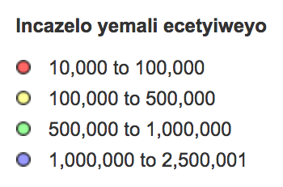
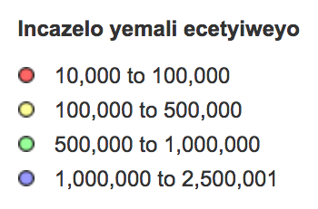
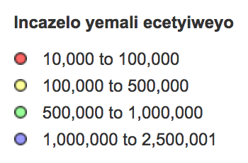

Interactive Timeline
Timeline Project using KnightLab to explore housing protests in Langa and Nyanga
EnglishUkuphenywa kwesicwangciso semali saseKapa, isixeko ekuthiwa sixhasa abahluphekileyo
Usodolophu wesiXeko saseKapa, uPatricia de Lille, uzibophelele kwisingcwangciso semali ezuza abahluphekileyo, kowda ingaba esisigqibo sokuxhasa abahluphekileyo siyabonakala kwisicwangciso semali? Lombuzo ujongwa ngokuhlalutya isicwangciso esicetyisiweyo sika2017/2018 kwimali echithiwe kwiwadi nganye. Lo msebenzi ujolise ekuchithweni kwemali eyinkunzi kwiinkonzo zentlalo, ngokubuza imibuzo emibini: 1. Ingaba yanele imali echithweyo kwiinkonzo zentlalo? 2. Ingaba imali yahlulwa ngendlela ezuza abahluphekileyo? Ukchithwa kwemali eyinkunzi kunikisa umdla ngoba kubonakalisa utyalo-mali lwexesha elide; ingaba isiXeko saseKapa sityala kwabasweleyo?
1. Ingaba yanele imali echithweyo kwiinkonzo zentlalo?
Igraphu ebonakalisa isicwangciso semali esetyenziswe kwiinkonzo zentlalo
2. Ingaba imali yahlulwa ngendlela ezuza abahluphekileyo?
Imephi yesiXeko sase Kapa ebonkalisa isicwangciso semali senkonzo zentlalo ngokuthelekiswa nentlawulo yonyaka kumzi ngamnye kwiwadi.
 

